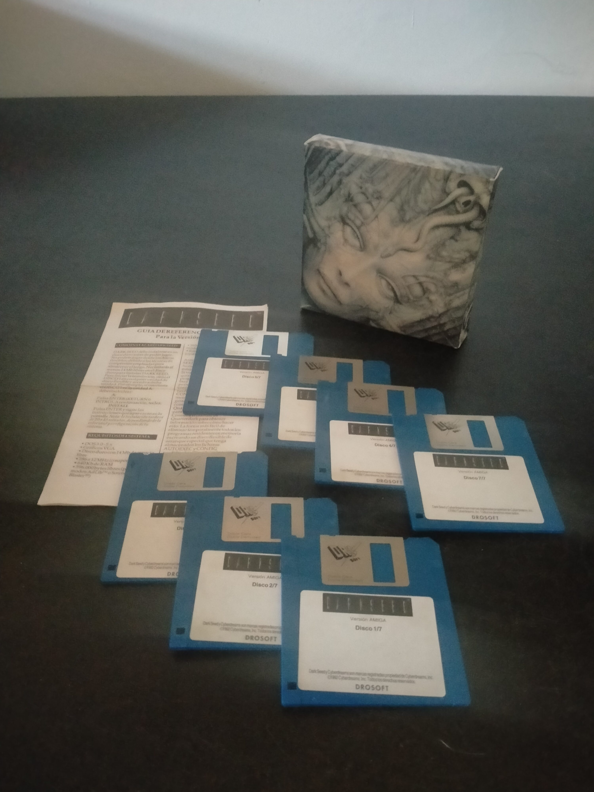

Ficha #000000
Dark Seed
Dark Seed es una aventura gráfica de terror y ciencia ficción publicada por Cyberdreams en 1992, especialmente recordada por integrar arte y diseños inspirados en la obra biomecánica de H. R. Giger. El juego sitúa al protagonista Mike Dawson en una pesadilla doméstica y extradimensional tras la implantación de una semilla alienígena en su cerebro, combinando investigación, puzles con límite temporal y una atmósfera opresiva muy distinta a la aventura gráfica humorística dominante de comienzos de los noventa. Su uso de gráficos de alta resolución y estética adulta lo convirtió en una pieza singular dentro del catálogo de aventuras de PC y microordenadores. Esta edición española distribuida por Dro Soft conserva especial interés documental por su localización física, su presentación Big Box, el soporte en disquetes de 3,5 pulgadas y la documentación de referencia asociada. La unidad mostrada corresponde visualmente a la versión Amiga distribuida por Dro Soft; el schema actual no contempla Amiga como plataforma, por lo que se consigna la plataforma PC equivalente permitida para mantener validez estructural.
- Formato
- Big Box
- Plataforma
- MsDos
- Género
- Aventura gráfica Point and click Terror Ciencia ficción Surrealismo
- Serie
- Todos Big Box
- Desarrollador
- Cyberdreams
- Distribuidor
- Cyberdreams, Dro Soft
- EAN
- —
Contenido de la edición
- Caja Big Box
- Guía de referencia
- 7 disquetes de 3,5 pulgadas
- Documentación impresa
Preservación
- Protección
- No determinado
- Formato recomendado
- Otro
- Jugable en virtualización
- Sí
Edición en disquetes de 3,5 pulgadas. Para preservación se recomienda realizar imagen individual de cada disquete, documentar etiquetas y orden de instalación, conservar digitalizada la guía de referencia y verificar ejecución en el entorno original correspondiente. En la versión PC MS-DOS la ejecución virtual es viable mediante DOSBox; en la unidad mostrada, al tratarse de discos rotulados como versión Amiga, sería necesaria preservación específica de disquete Amiga mediante flujo o imagen compatible.